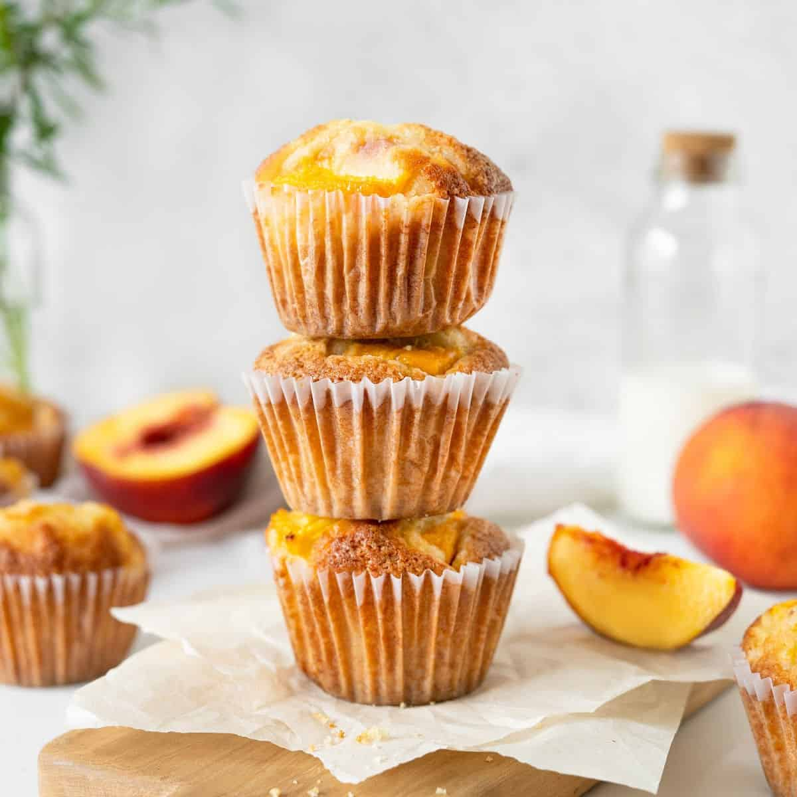

Back in 2019, one of my family's favorite restaurants, Folks' Southern Kitchen, closed down in Marrieta, GA. They had some of the best fried chicken but alos had the best Peach lemonade and Peach muffins that I have ever tasted! Every since they closed, I have been trying to figureout how to recreate those same delicious muffins. So here is my copycat recipe so far as I plan to continue refining it in the future.

Prep Time - 15 minutes
Cook Time - 30 minutes
These ingredients will make 12 regular muffins